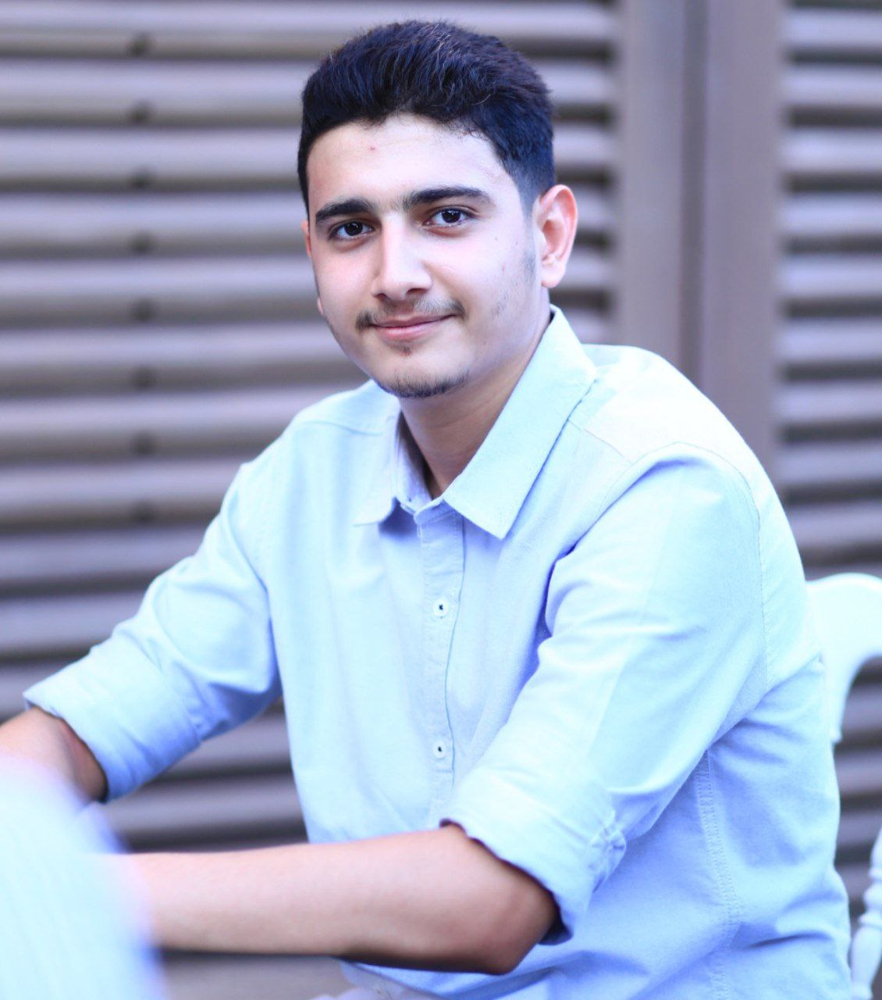

About Me
I am a fourth-year Computer Information Systems (CIS) student at Jordan University of Science and Technology, interested in web and mobile application development, with a strong focus on building clean, user-friendly interfaces.

Key Soft Skills
- Teamwork and collaboration in development projects
- Analytical and critical thinking
- Problem-solving and debugging skills
- Effective communication with technical and non-technical people
- Adaptability and continuous learning in new technologies
Favorite Programming Languages & Development Tools
| Name | Category | Official Website |
|---|---|---|
| HTML & CSS | Web Front-end | developer.mozilla.org |
| JavaScript | Web Programming Language | MDN JavaScript |
| Flutter | Cross-platform App Framework | flutter.dev |
| Node.js | Back-end Runtime | nodejs.org |
Contact via University Email
You can reach me at my university email: wmalkhatib22@cit.just.edu.jo
Where Do I See Myself in 4 Years?
In four years, I see myself working as a professional web and mobile application developer, building reliable and scalable solutions for real-world problems.
I aim to specialize in modern web frameworks and cross‑platform technologies, focusing on clean architecture, performance, and user experience.
I plan to contribute to open-source projects and continuously improve my skills in front-end and back-end development, including APIs and cloud integration.
Eventually, I would like to lead development teams or start my own projects, delivering high-quality digital products for businesses and users.